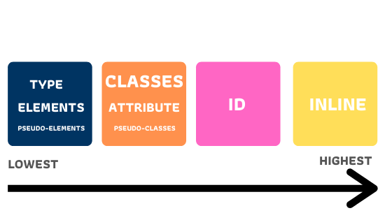

CSS Specificity คืออะไร ?
CSS Specificity คือการเลือก CSS Selector มาแสดงบนเว็บไซต์โดยแต่ละ selector
จะมีลำดับความสำคัญแตกต่างกัน

ประเภทของ Selector
1. Inline Style คือการใส่ style เข้าไปใน tag ที่ต้องการได้เลย
2. ID Selectors เป็นการนำเอา id มาใช้เป็น selector ตัวอย่างการใช้เช่น #header-img
3. Class Selectors คือการนำ class มาใช้เป็น selector ตัวอย่างการใช้เช่น .header-img
4. Attribute Selectors ตัวอย่างการใช้งานเช่น [type="_blank"]
5. Pseudo-classes ตัวอย่างการใช้เช่น :hover
6. Type Selectors คือการนำ elements มาเป็น selector ตัวอย่างการใช้งานเช่น h1, h2, div
และยังมีอื่นๆอีกมากมาย
การคำนวณค่า Specificity ของ Selector
สมมุติให้ Selector แต่ละประเภทมีค่าดังนี้ (เรียงจากสูงสุดไปต่ำสุด)
1. Inline Style มีค่า 1000
2. ID Selectors มีค่า 100
3. Class selectors, Attributes selectors, Pseudo-classes มีค่า 10
4. Type selectors, Pseudo-elements มีค่า 1
5. อื่นๆ มีค่า 0
ตัวอย่างการคำนวณค่า Specificity ยิ่งค่ามากก็จะถูกนำมาแสดงบนเว็บไซต์
div a {...} = 1+1 = 2
.box a {...} = 10+1 = 11
div h1 a apan {...} = 1+1+1+1 = 4
.page h1 #title {...} = 10+1+100 = 111
#nav .selected > a:hover = 100+10+1+10 = 121
li:first-child h2 .title = 1+10+1+10 = 22
เว็บไซต์สำหรับคำนวณค่า Specificity
ไปยังเว็บไซต์คลิกที่นี่ https://specificity.keegan.st/